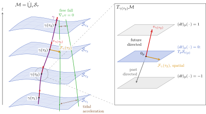

Chapter 9 • Newton-Cartan Theory
9.4 Pseudo-Forces
In the spatial part of Newton II, each \(\Gamma\)-term looks like an additional force. This section shows that, in the absence of gravity, all of them are produced by the choice of chart, and identifies them with the pseudo-forces of classical mechanics (Subsections 9.4.1 and 9.4). Gravity is then encoded in the same kind of term, and the curvature decides when it can be removed and when it cannot (Subsections 9.5–9.5.2).
9.4.1 Inertial Charts
Without gravity, observation (Newton’s first law in its classical form) tells us that every free particle moves along a straight line at constant velocity, \(\ddot{\gamma}^\alpha_\mathcal{U} = 0\). Identifying terms, we observe that, in this chart, all connection coefficients then vanish: \(\Gamma_\mathscr{X} = 0\). A stratified chart \((\mathcal{U}, \mathscr{X})\) with \(\Gamma_\mathscr{X} = 0\) is called inertial. In this case \(\mathrm{Riem} = 0\).
Let \((\mathcal{V}, \mathscr{Y})\) be any other stratified chart. Since \(\Gamma_\mathscr{X} = 0\), only the inhomogeneous term of the transformation law (Chapter 6) survives, \begin{align*} \left( \Gamma_\mathscr{Y} \right)^i_{jk} = \frac{\partial \mathscr{Y}^i}{\partial \mathscr{X}^s} \, \frac{\partial^2 \mathscr{X}^s}{\partial \mathscr{Y}^k \, \partial \mathscr{Y}^j}, \end{align*} so every \(\Gamma\)-term in \((\mathcal{V}, \mathscr{Y})\) is produced by the change of chart alone, and which term appears depends on which second derivatives of the transition map \(\textrm{\runic ᛖ}_{\mathcal{V}\mathcal{U}} = \mathscr{X} \circ \mathscr{Y}^{-1}\) are non-zero.
To write transition maps explicitly, we denote the coordinates of a point in \(\mathscr{X}(\mathcal{U} \cap \mathcal{V})\) and \(\mathscr{Y}(\mathcal{U} \cap \mathcal{V})\) by \(\xi = (\xi^0, \xi^1, \xi^2, \xi^3)\) and \(\eta = (\eta^0, \eta^1, \eta^2, \eta^3)\), so that \(\xi = \textrm{\runic ᛖ}_{\mathcal{V}\mathcal{U}}(\eta)\). Both charts being stratified, \(\xi^0 = \eta^0\) is the value of absolute time, written \(t\). Component functions are likewise expressed in terms of these coordinates, e.g. \(\left( \Gamma_\mathscr{Y} \right)^i_{jk}(\eta) \coloneqq \left( \Gamma_\mathscr{Y} \right)^i_{jk}\big( \mathscr{Y}^{-1}(\eta) \big)\). Along a worldline parametrized by absolute time, \(\gamma^\alpha_\mathcal{V} \coloneqq \mathscr{Y}^\alpha \circ \gamma\) are its spatial coordinates in \((\mathcal{V}, \mathscr{Y})\), and \(f^\alpha_\gamma\) the components of the force w.r.t. this chart.

9.4.2 Pseudo-Forces
Rigidly moving axes5. Consider axes rotating by an angle \(\theta(t)\) about the third axis, with origin at \(b^\sigma(t)\) in \((\mathcal{U}, \mathscr{X})\). Both charts being stratified, their time coordinate is the absolute time \(t\), and we write \(\mathscr{X}(p) = (t, \alpha_1, \alpha_2, \alpha_3)\) and \(\mathscr{Y}(p) = (t, \beta_1, \beta_2, \beta_3)\). The transition map \(\textrm{\runic ᛖ}_{\mathcal{V}\mathcal{U}} = \mathscr{X} \circ \mathscr{Y}^{-1}\) is \begin{align*} \textrm{\runic ᛖ}_{\mathcal{V}\mathcal{U}} \colon \begin{pmatrix} t \\ \beta_1 \\ \beta_2 \\ \beta_3 \end{pmatrix}_\mathcal{V} \longmapsto \begin{pmatrix} t \\ \alpha_1 \\ \alpha_2 \\ \alpha_3 \end{pmatrix}_\mathcal{U} = \begin{pmatrix} t \\ \beta_1 \cos \theta - \beta_2 \sin \theta + b^1 \\ \beta_1 \sin \theta + \beta_2 \cos \theta + b^2 \\ \beta_3 + b^3 \end{pmatrix}_\mathcal{U}, \qquad \theta = \theta(t), \quad b^\sigma = b^\sigma(t), \end{align*} with inverse \begin{align*} \textrm{\runic ᛖ}_{\mathcal{U}\mathcal{V}} \colon \begin{pmatrix} t \\ \alpha_1 \\ \alpha_2 \\ \alpha_3 \end{pmatrix}_\mathcal{U} \longmapsto \begin{pmatrix} t \\ \beta_1 \\ \beta_2 \\ \beta_3 \end{pmatrix}_\mathcal{V} = \begin{pmatrix} t \\ \big( \alpha_1 - b^1 \big) \cos \theta + \big( \alpha_2 - b^2 \big) \sin \theta \\ - \big( \alpha_1 - b^1 \big) \sin \theta + \big( \alpha_2 - b^2 \big) \cos \theta \\ \alpha_3 - b^3 \end{pmatrix}_\mathcal{V}, \qquad \theta = \theta(t), \quad b^\sigma = b^\sigma(t). \end{align*} The first derivatives of both transition maps, with \(\frac{d}{dt} \big( \cos \theta, \sin \theta \big) = \dot{\theta} \big( - \sin \theta, \cos \theta \big)\), are \begin{align*} \left( \frac{\partial \mathscr{X}^s}{\partial \mathscr{Y}^j} \right) &= \begin{pmatrix} 1 & 0 & 0 & 0 \\ - \dot{\theta} \big( \beta_1 \sin \theta + \beta_2 \cos \theta \big) + \dot{b}^1 & \cos \theta & - \sin \theta & 0 \\ \dot{\theta} \big( \beta_1 \cos \theta - \beta_2 \sin \theta \big) + \dot{b}^2 & \sin \theta & \cos \theta & 0 \\ \dot{b}^3 & 0 & 0 & 1 \end{pmatrix}, \\[8pt] \left( \frac{\partial \mathscr{Y}^i}{\partial \mathscr{X}^s} \right) &= \begin{pmatrix} 1 & 0 & 0 & 0 \\ \dot{\theta} \, \beta_2 - \dot{b}^1 \cos \theta - \dot{b}^2 \sin \theta & \cos \theta & \sin \theta & 0 \\ - \dot{\theta} \, \beta_1 + \dot{b}^1 \sin \theta - \dot{b}^2 \cos \theta & - \sin \theta & \cos \theta & 0 \\ - \dot{b}^3 & 0 & 0 & 1 \end{pmatrix}, \end{align*} with \(\frac{\partial \mathscr{Y}^i}{\partial \mathscr{X}^s} \, \frac{\partial \mathscr{X}^s}{\partial \mathscr{Y}^j} = \delta^i_j\). Differentiating \(\partial \mathscr{X}^s / \partial \mathscr{Y}^j\) once more, the second derivatives are \begin{gather*} \frac{\partial^2 \mathscr{X}^0}{\partial \mathscr{Y}^k \, \partial \mathscr{Y}^j} = 0, \qquad \frac{\partial^2 \mathscr{X}^\sigma}{\partial \mathscr{Y}^\delta \, \partial \mathscr{Y}^\kappa} = 0, \\[4pt] \begin{aligned} \frac{\partial^2 \mathscr{X}^1}{\partial \mathscr{Y}^0 \, \partial \mathscr{Y}^1} &= - \dot{\theta} \sin \theta, & \frac{\partial^2 \mathscr{X}^1}{\partial \mathscr{Y}^0 \, \partial \mathscr{Y}^2} &= - \dot{\theta} \cos \theta, \\ \frac{\partial^2 \mathscr{X}^2}{\partial \mathscr{Y}^0 \, \partial \mathscr{Y}^1} &= \dot{\theta} \cos \theta, & \frac{\partial^2 \mathscr{X}^2}{\partial \mathscr{Y}^0 \, \partial \mathscr{Y}^2} &= - \dot{\theta} \sin \theta, \end{aligned} \qquad \frac{\partial^2 \mathscr{X}^\sigma}{\partial \mathscr{Y}^0 \, \partial \mathscr{Y}^3} = \frac{\partial^2 \mathscr{X}^3}{\partial \mathscr{Y}^0 \, \partial \mathscr{Y}^\kappa} = 0, \\[4pt] \begin{pmatrix} \dfrac{\partial^2 \mathscr{X}^1}{\partial \mathscr{Y}^0 \, \partial \mathscr{Y}^0} \\[10pt] \dfrac{\partial^2 \mathscr{X}^2}{\partial \mathscr{Y}^0 \, \partial \mathscr{Y}^0} \\[10pt] \dfrac{\partial^2 \mathscr{X}^3}{\partial \mathscr{Y}^0 \, \partial \mathscr{Y}^0} \end{pmatrix} = \begin{pmatrix} - \ddot{\theta} \big( \beta_1 \sin \theta + \beta_2 \cos \theta \big) - \dot{\theta}^2 \big( \beta_1 \cos \theta - \beta_2 \sin \theta \big) + \ddot{b}^1 \\[4pt] \ddot{\theta} \big( \beta_1 \cos \theta - \beta_2 \sin \theta \big) - \dot{\theta}^2 \big( \beta_1 \sin \theta + \beta_2 \cos \theta \big) + \ddot{b}^2 \\[4pt] \ddot{b}^3 \end{pmatrix}. \end{gather*} Since \(\Gamma_\mathscr{X} = 0\), only the inhomogeneous term of the transformation law survives, \begin{align*} \left( \Gamma_\mathscr{Y} \right)^i_{jk} = \frac{\partial \mathscr{Y}^i}{\partial \mathscr{X}^0} \, \underbrace{\frac{\partial^2 \mathscr{X}^0}{\partial \mathscr{Y}^k \, \partial \mathscr{Y}^j}}_{= \, 0} + \sum_\sigma \frac{\partial \mathscr{Y}^i}{\partial \mathscr{X}^\sigma} \, \frac{\partial^2 \mathscr{X}^\sigma}{\partial \mathscr{Y}^k \, \partial \mathscr{Y}^j} \quad \longrightarrow \quad \begin{cases} \left( \Gamma_\mathscr{Y} \right)^0_{jk} = \displaystyle\sum_\sigma \underbrace{\frac{\partial \mathscr{Y}^0}{\partial \mathscr{X}^\sigma}}_{= \, 0} \, \frac{\partial^2 \mathscr{X}^\sigma}{\partial \mathscr{Y}^k \, \partial \mathscr{Y}^j} = 0, \\[18pt] \left( \Gamma_\mathscr{Y} \right)^\alpha_{jk} = \displaystyle\sum_\sigma \frac{\partial \mathscr{Y}^\alpha}{\partial \mathscr{X}^\sigma} \, \frac{\partial^2 \mathscr{X}^\sigma}{\partial \mathscr{Y}^k \, \partial \mathscr{Y}^j}, \end{cases} \end{align*} so that the entries \(\partial \mathscr{Y}^\alpha / \partial \mathscr{X}^0\) of the first column, although non-zero, drop out. Since the spatial second derivatives vanish, \(\left( \Gamma_\mathscr{Y} \right)^\alpha_{\beta\delta} = 0\), and since those involving \(\mathscr{Y}^3\) or \(\mathscr{X}^3\) vanish except \(\partial^2 \mathscr{X}^3 / \partial \mathscr{Y}^0 \partial \mathscr{Y}^0\), the only candidates are \(\Gamma^\alpha_{0\kappa} = \Gamma^\alpha_{\kappa 0}\) with \(\alpha, \kappa \in \{1, 2\}\), and \(\Gamma^\alpha_{00}\): \begin{align*} \left( \Gamma_\mathscr{Y} \right)^1_{01} &= \frac{\partial \mathscr{Y}^1}{\partial \mathscr{X}^1} \, \frac{\partial^2 \mathscr{X}^1}{\partial \mathscr{Y}^0 \, \partial \mathscr{Y}^1} + \frac{\partial \mathscr{Y}^1}{\partial \mathscr{X}^2} \, \frac{\partial^2 \mathscr{X}^2}{\partial \mathscr{Y}^0 \, \partial \mathscr{Y}^1} = \cos \theta \, \big( - \dot{\theta} \sin \theta \big) + \sin \theta \, \big( \dot{\theta} \cos \theta \big) = 0, \\[4pt] \left( \Gamma_\mathscr{Y} \right)^1_{02} &= \frac{\partial \mathscr{Y}^1}{\partial \mathscr{X}^1} \, \frac{\partial^2 \mathscr{X}^1}{\partial \mathscr{Y}^0 \, \partial \mathscr{Y}^2} + \frac{\partial \mathscr{Y}^1}{\partial \mathscr{X}^2} \, \frac{\partial^2 \mathscr{X}^2}{\partial \mathscr{Y}^0 \, \partial \mathscr{Y}^2} = \cos \theta \, \big( - \dot{\theta} \cos \theta \big) + \sin \theta \, \big( - \dot{\theta} \sin \theta \big) = - \dot{\theta}, \\[4pt] \left( \Gamma_\mathscr{Y} \right)^2_{01} &= \frac{\partial \mathscr{Y}^2}{\partial \mathscr{X}^1} \, \frac{\partial^2 \mathscr{X}^1}{\partial \mathscr{Y}^0 \, \partial \mathscr{Y}^1} + \frac{\partial \mathscr{Y}^2}{\partial \mathscr{X}^2} \, \frac{\partial^2 \mathscr{X}^2}{\partial \mathscr{Y}^0 \, \partial \mathscr{Y}^1} = \big( - \sin \theta \big) \big( - \dot{\theta} \sin \theta \big) + \cos \theta \, \big( \dot{\theta} \cos \theta \big) = \dot{\theta}, \\[4pt] \left( \Gamma_\mathscr{Y} \right)^2_{02} &= \frac{\partial \mathscr{Y}^2}{\partial \mathscr{X}^1} \, \frac{\partial^2 \mathscr{X}^1}{\partial \mathscr{Y}^0 \, \partial \mathscr{Y}^2} + \frac{\partial \mathscr{Y}^2}{\partial \mathscr{X}^2} \, \frac{\partial^2 \mathscr{X}^2}{\partial \mathscr{Y}^0 \, \partial \mathscr{Y}^2} = \big( - \sin \theta \big) \big( - \dot{\theta} \cos \theta \big) + \cos \theta \, \big( - \dot{\theta} \sin \theta \big) = 0, \end{align*} and, collecting the \(\ddot{\theta}\)- and \(\dot{\theta}^2\)-terms, which combine through \(\cos^2 \theta + \sin^2 \theta = 1\), \begin{align*} \left( \Gamma_\mathscr{Y} \right)^1_{00} &= \frac{\partial \mathscr{Y}^1}{\partial \mathscr{X}^1} \, \frac{\partial^2 \mathscr{X}^1}{\partial \mathscr{Y}^0 \, \partial \mathscr{Y}^0} + \frac{\partial \mathscr{Y}^1}{\partial \mathscr{X}^2} \, \frac{\partial^2 \mathscr{X}^2}{\partial \mathscr{Y}^0 \, \partial \mathscr{Y}^0} \\ &= \cos \theta \Big[ - \ddot{\theta} \big( \beta_1 \sin \theta + \beta_2 \cos \theta \big) - \dot{\theta}^2 \big( \beta_1 \cos \theta - \beta_2 \sin \theta \big) + \ddot{b}^1 \Big] \\ &\quad + \sin \theta \Big[ \ddot{\theta} \big( \beta_1 \cos \theta - \beta_2 \sin \theta \big) - \dot{\theta}^2 \big( \beta_1 \sin \theta + \beta_2 \cos \theta \big) + \ddot{b}^2 \Big] \\ &= - \ddot{\theta} \, \beta_2 \big( \cos^2 \theta + \sin^2 \theta \big) - \dot{\theta}^2 \, \beta_1 \big( \cos^2 \theta + \sin^2 \theta \big) + \cos \theta \, \ddot{b}^1 + \sin \theta \, \ddot{b}^2, \\[6pt] \left( \Gamma_\mathscr{Y} \right)^2_{00} &= \frac{\partial \mathscr{Y}^2}{\partial \mathscr{X}^1} \, \frac{\partial^2 \mathscr{X}^1}{\partial \mathscr{Y}^0 \, \partial \mathscr{Y}^0} + \frac{\partial \mathscr{Y}^2}{\partial \mathscr{X}^2} \, \frac{\partial^2 \mathscr{X}^2}{\partial \mathscr{Y}^0 \, \partial \mathscr{Y}^0} \\ &= - \sin \theta \Big[ - \ddot{\theta} \big( \beta_1 \sin \theta + \beta_2 \cos \theta \big) - \dot{\theta}^2 \big( \beta_1 \cos \theta - \beta_2 \sin \theta \big) + \ddot{b}^1 \Big] \\ &\quad + \cos \theta \Big[ \ddot{\theta} \big( \beta_1 \cos \theta - \beta_2 \sin \theta \big) - \dot{\theta}^2 \big( \beta_1 \sin \theta + \beta_2 \cos \theta \big) + \ddot{b}^2 \Big] \\ &= \ddot{\theta} \, \beta_1 \big( \sin^2 \theta + \cos^2 \theta \big) - \dot{\theta}^2 \, \beta_2 \big( \sin^2 \theta + \cos^2 \theta \big) - \sin \theta \, \ddot{b}^1 + \cos \theta \, \ddot{b}^2, \\[6pt] \left( \Gamma_\mathscr{Y} \right)^3_{00} &= \frac{\partial \mathscr{Y}^3}{\partial \mathscr{X}^3} \, \frac{\partial^2 \mathscr{X}^3}{\partial \mathscr{Y}^0 \, \partial \mathscr{Y}^0} = 1 \cdot \ddot{b}^3 . \end{align*} Therefore, the only non-vanishing coefficient functions are \begin{align*} \Gamma^1_{02} = \Gamma^1_{20} = - \dot{\theta}, \qquad \Gamma^2_{01} = \Gamma^2_{10} = \dot{\theta}, \qquad \begin{aligned} \Gamma^1_{00}(\beta) &= - \dot{\theta}^2 \, \beta_1 - \ddot{\theta} \, \beta_2 + \cos \theta \, \ddot{b}^1 + \sin \theta \, \ddot{b}^2, \\ \Gamma^2_{00}(\beta) &= - \dot{\theta}^2 \, \beta_2 + \ddot{\theta} \, \beta_1 - \sin \theta \, \ddot{b}^1 + \cos \theta \, \ddot{b}^2, \\ \Gamma^3_{00}(\beta) &= \ddot{b}^3. \end{aligned} \end{align*}
Along a worldline parametrized by absolute time, \(\gamma^0_\mathcal{V} = \mathscr{Y}^0 \circ \gamma = t\), so that \(\dot{\gamma}^0_\mathcal{V} = 1\), and its spatial coordinates are \((\beta_1, \beta_2, \beta_3) = (\gamma^1_\mathcal{V}, \gamma^2_\mathcal{V}, \gamma^3_\mathcal{V})\). The spatial components of Newton II, \begin{align*} \ddot{\gamma}^\alpha_\mathcal{V} + \Gamma^\alpha_{jk} \, \dot{\gamma}^j_\mathcal{V} \, \dot{\gamma}^k_\mathcal{V} = \frac{f^\alpha_\gamma}{m}, \end{align*} have, splitting the sum over \(j, k\) into temporal and spatial values, the \(\Gamma\)-term \begin{align*} \Gamma^\alpha_{jk} \, \dot{\gamma}^j_\mathcal{V} \, \dot{\gamma}^k_\mathcal{V} = \Gamma^\alpha_{00} \, \underbrace{\big( \dot{\gamma}^0_\mathcal{V} \big)^2}_{= \, 1} + \big( \Gamma^\alpha_{0\beta} + \Gamma^\alpha_{\beta0} \big) \, \underbrace{\dot{\gamma}^0_\mathcal{V}}_{= \, 1} \, \dot{\gamma}^\beta_\mathcal{V} + \underbrace{\Gamma^\alpha_{\beta\delta}}_{= \, 0} \, \dot{\gamma}^\beta_\mathcal{V} \, \dot{\gamma}^\delta_\mathcal{V} = \Gamma^\alpha_{00} + 2 \, \Gamma^\alpha_{0\beta} \, \dot{\gamma}^\beta_\mathcal{V}, \end{align*} using \(\Gamma^\alpha_{0\beta} = \Gamma^\alpha_{\beta0}\). Inserting the coefficient functions obtained above, with \(\Gamma^\alpha_{00}\) evaluated along the worldline, and moving every \(\Gamma\)-term to the right-hand side, \begin{align*} m \begin{pmatrix} \ddot{\gamma}^1_\mathcal{V} \\ \ddot{\gamma}^2_\mathcal{V} \\ \ddot{\gamma}^3_\mathcal{V} \end{pmatrix} = \begin{pmatrix} f^1_\gamma \\ f^2_\gamma \\ f^3_\gamma \end{pmatrix} + \begin{pmatrix} 2 m \dot{\theta} \, \dot{\gamma}^2_\mathcal{V} \\ - 2 m \dot{\theta} \, \dot{\gamma}^1_\mathcal{V} \\ 0 \end{pmatrix} + \begin{pmatrix} m \dot{\theta}^2 \, \gamma^1_\mathcal{V} \\ m \dot{\theta}^2 \, \gamma^2_\mathcal{V} \\ 0 \end{pmatrix} + \begin{pmatrix} m \ddot{\theta} \, \gamma^2_\mathcal{V} \\ - m \ddot{\theta} \, \gamma^1_\mathcal{V} \\ 0 \end{pmatrix} - m \begin{pmatrix} \cos \theta \, \ddot{b}^1 + \sin \theta \, \ddot{b}^2 \\ - \sin \theta \, \ddot{b}^1 + \cos \theta \, \ddot{b}^2 \\ \ddot{b}^3 \end{pmatrix}, \end{align*} i.e., component by component, the spatial part of Newton II becomes \begin{align*} m \, \ddot{\gamma}^1_\mathcal{V} &= f^1_\gamma \underbrace{+ \, 2 m \dot{\theta} \, \dot{\gamma}^2_\mathcal{V}}_{\text{Coriolis}} \underbrace{+ \, m \dot{\theta}^2 \, \gamma^1_\mathcal{V}}_{\text{centrifugal}} \underbrace{+ \, m \ddot{\theta} \, \gamma^2_\mathcal{V}}_{\text{Euler}} \underbrace{- \, m \big( \cos \theta \, \ddot{b}^1 + \sin \theta \, \ddot{b}^2 \big)}_{\text{translational}}, \\ m \, \ddot{\gamma}^2_\mathcal{V} &= f^2_\gamma \underbrace{- \, 2 m \dot{\theta} \, \dot{\gamma}^1_\mathcal{V}}_{\text{Coriolis}} \underbrace{+ \, m \dot{\theta}^2 \, \gamma^2_\mathcal{V}}_{\text{centrifugal}} \underbrace{- \, m \ddot{\theta} \, \gamma^1_\mathcal{V}}_{\text{Euler}} \underbrace{- \, m \big( - \sin \theta \, \ddot{b}^1 + \cos \theta \, \ddot{b}^2 \big)}_{\text{translational}}, \\ m \, \ddot{\gamma}^3_\mathcal{V} &= f^3_\gamma \underbrace{- \, m \ddot{b}^3}_{\text{translational}}. \end{align*}
The Coriolis force comes from \(\Gamma^\alpha_{0\beta}\), its factor \(2\) from the two equal terms \(\Gamma^\alpha_{0\beta} = \Gamma^\alpha_{\beta0}\); the other three come from \(\Gamma^\alpha_{00}\)6. The translational force is the one felt in an accelerating vehicle, the same for every particle; for \(\theta = 0\) it is the only one, \(\Gamma^\alpha_{00} = \ddot{b}^\alpha\). Since \(\Gamma^\alpha_{\beta\delta}\) involves only the second derivatives \(\partial^2 \xi^\sigma / \partial \eta^\delta \, \partial \eta^\beta\), it vanishes for any change linear in the spatial coordinates. It appears only when \(\xi^\sigma\) depends non-linearly on \(\eta\), where it is part of the curvilinear expression of the acceleration, such as \(\ddot{r} - r \dot{\varphi}^2\), which is not considered a pseudo-force.
Rigid changes are the most general ones from an inertial chart to Cartesian axes moving rigidly with respect to it. Nothing forbids more exotic stratified charts, related to an inertial one by non-rigid changes, in which the \(\Gamma\)-terms take other forms. The pseudo-forces of classical mechanics are just the small subset of all chart-induced effects that arises from rigid motions of the axes.
For a general rotation matrix \(R(t)\), \(\sum_\sigma R^\sigma{}_\alpha R^\sigma{}_\beta = \delta_{\alpha\beta}\), the same computation gives \(\Gamma^\alpha_{0\beta} = \Gamma^\alpha_{\beta0} = \Omega^\alpha{}_\beta\) and \(\Gamma^\alpha_{00}(\eta) = \big( \dot{\Omega}^\alpha{}_\beta + \Omega^\alpha{}_\kappa \, \Omega^\kappa{}_\beta \big) \eta^\beta + (R^{-1})^\alpha{}_\sigma \, \ddot{b}^\sigma\), with \(\Omega^\alpha{}_\beta \coloneqq (R^{-1})^\alpha{}_\sigma \, \dot{R}^\sigma{}_\beta\) antisymmetric. Then \(\Omega^\alpha{}_\beta = \sum_\kappa \varepsilon_{\alpha\kappa\beta} \, \omega^\kappa\) defines the angular velocity \(\omega(t) \in \mathbb{R}^3\) of the axes, \(\Omega^\alpha{}_\beta \, v^\beta = (\omega \times v)^\alpha\), and with \(r \coloneqq (\gamma^1_\mathcal{V}, \gamma^2_\mathcal{V}, \gamma^3_\mathcal{V})\) the four terms are the familiar \(- 2 m \, \omega \times \dot{r}\), \(- m \, \omega \times (\omega \times r)\), \(- m \, \dot{\omega} \times r\) and \(- m \, R^{-1} \ddot{b}\). Above, \(\omega = (0, 0, \dot{\theta})\).